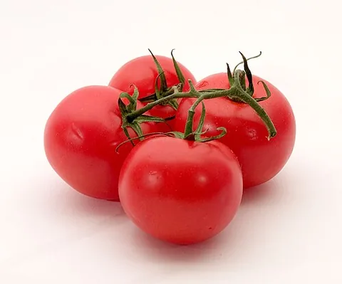 | 番茄 | Softeis | Tomato_je.jpg | CC BY-SA 3.0 |
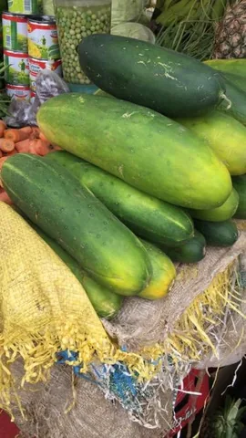 | 黄瓜 | Olaasunbo | Cucumber in ilorin.jpg | CC0 |
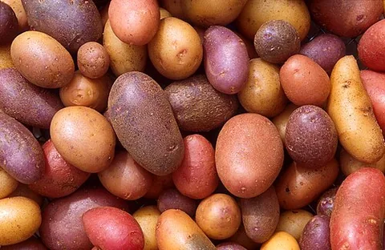 | 土豆 | Scott Bauer, USDA ARS | Patates.jpg | Public domain |
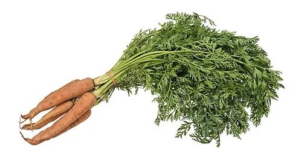 | 胡萝卜 | Evan-Amos | Vegetable-Carrot-Bundle-wStalks.jpg | Public domain |
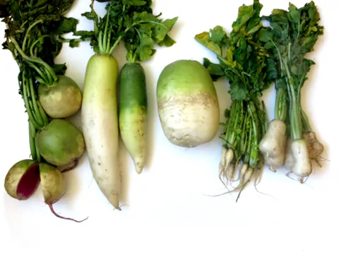 | 白萝卜 | KimYunmi | Different_kinds_of_White_Radish.png | CC BY-SA 4.0 |
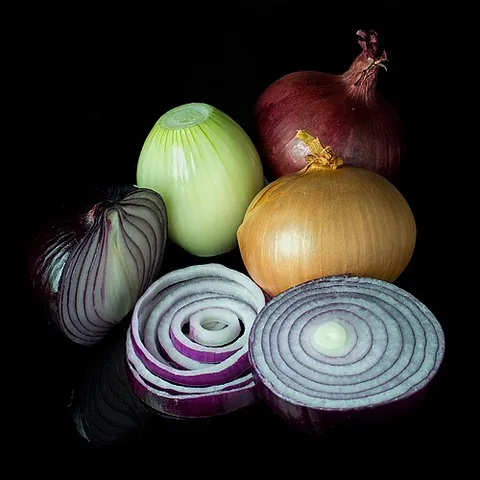 | 洋葱 | Colin | Mixed_onions.jpg | CC BY-SA 3.0 |
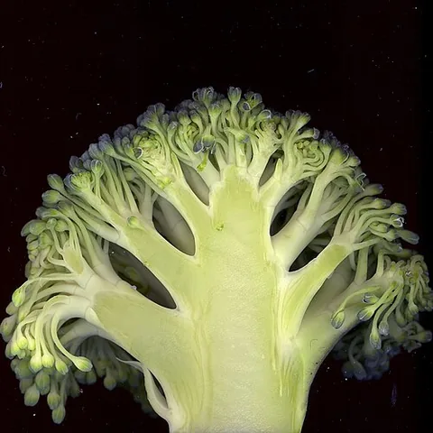 | 西兰花 | Roger prat | Brocoli.jpg | CC BY-SA 3.0 |
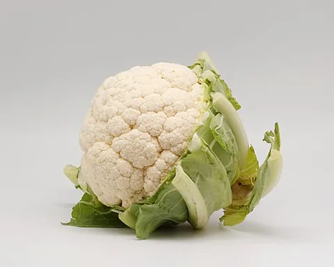 | 花菜 | Coyau | Chou-fleur_02.jpg | CC BY-SA 3.0 |
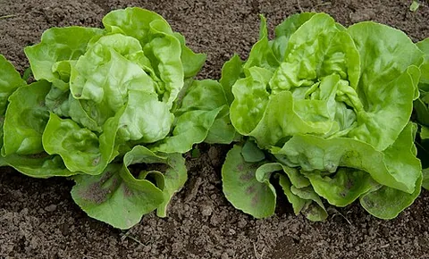 | 生菜 | Dwight Sipler from Stow, MA, USA | Lettuce Mini Heads (7331119710).jpg | CC BY 2.0 |
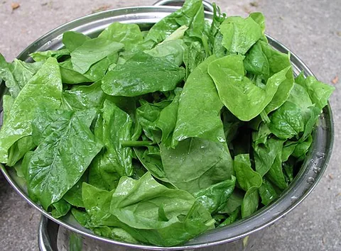 | 菠菜 | Nillerdk | Spinach leaves.jpg | CC BY 3.0 |
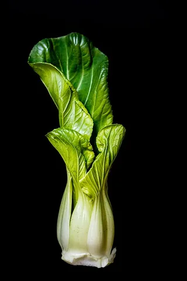 | 小白菜 | spurekar | Bok_Choy_(49553125456).jpg | CC BY 2.0 |
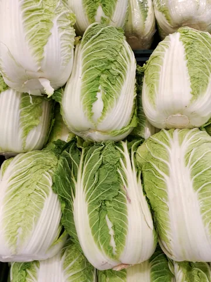 | 大白菜 | Bayartai | Napa_cabbages.png | CC0 |
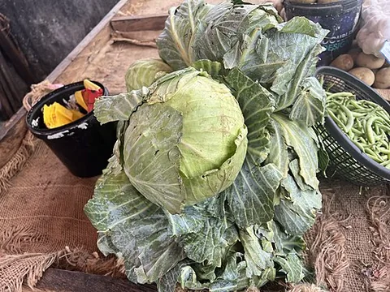 | 卷心菜 | Iwai-Dialax | Cabbage Vegetable.jpg | CC BY 4.0 |
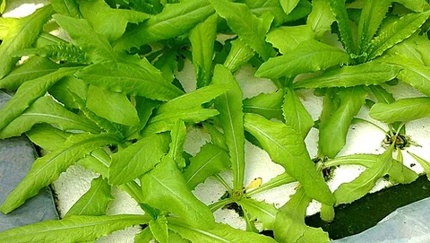 | 油麦菜 | Rock com cn | 油麥菜.jpg | CC BY-SA 3.0 |
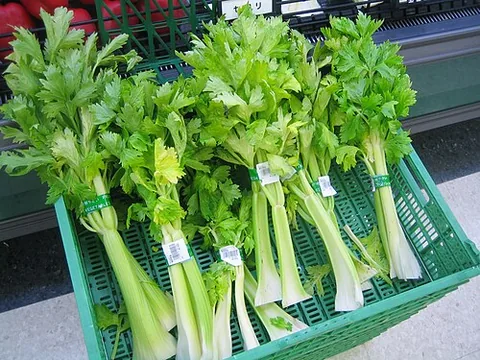 | 芹菜 | Lombroso | Celery_1.jpg | Public domain |
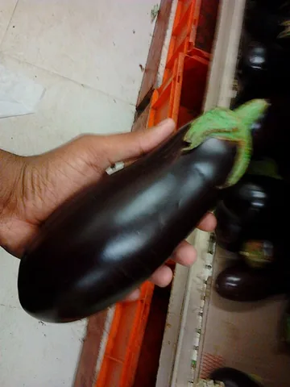 | 茄子 | Aravind Sivaraj | An Indian Purple Eggplant (Brinjal).jpg | CC BY-SA 3.0 |
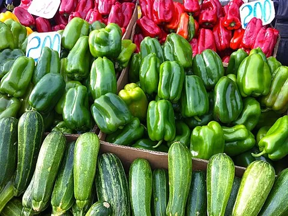 | 青椒 | Sebastián Rojas | Green Pepper (22404683).jpeg | CC BY-SA 3.0 |
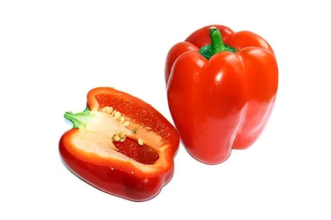 | 红椒 | AntanO | Red bell pepper.jpg | CC BY-SA 4.0 |
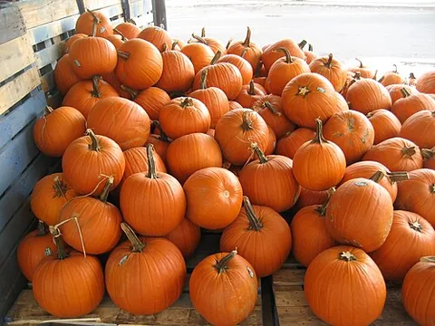 | 南瓜 | Infrogmation of New Orleans | FrenchMarketPumpkinsB.jpg | CC BY-SA 3.0 |
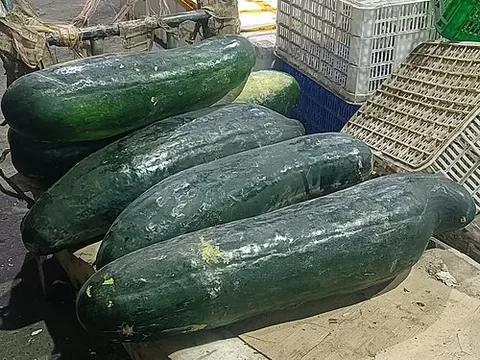 | 冬瓜 | Fumikas Sagisavas | Raw winter melon.jpg | CC0 |
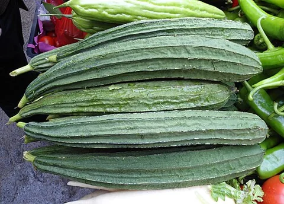 | 丝瓜 | Anna Frodesiak | Luffa acutangula vegetable 019.jpg | CC0 |
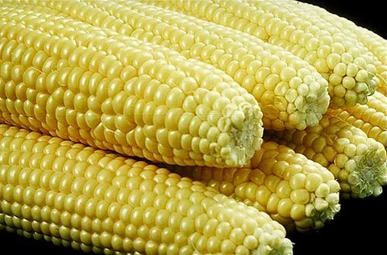 | 玉米 | The original Uploader was wstoakLL at English Wikipedia | VegCorn.jpg | Public domain |
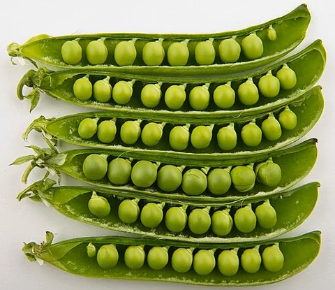 | 豌豆 | Bill Ebbesen | Peas_in_pods_-_Studio.jpg | CC BY-SA 3.0 |
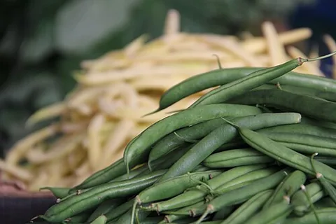 | 四季豆 | Lin dafni | Green beans.jpg | CC BY-SA 4.0 |
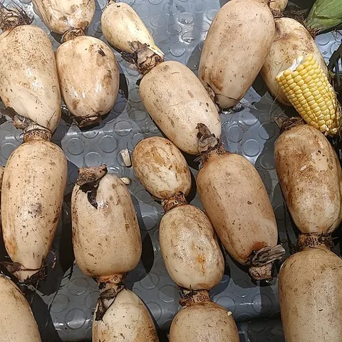 | 莲藕 | Fumikas Sagisavas | Lotus roots (20240716).jpg | CC0 |
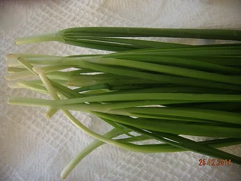 | 韭菜 | Seligne | Chinese Chives กุ่ยช่าย.JPG | CC0 |
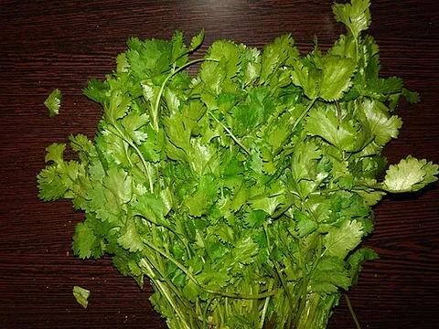 | 香菜 | Rupeshm364 | Coriander Leaves.jpg | CC BY-SA 4.0 |
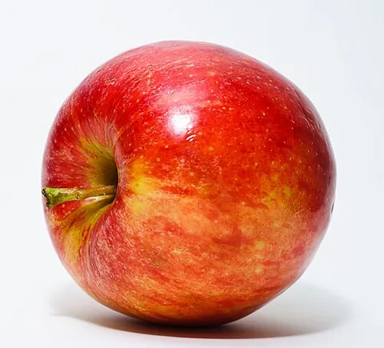 | 苹果 | Abhijit Tembhekar from Mumbai, India | Red Apple.jpg | CC BY 2.0 |
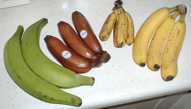 | 香蕉 | TimothyPilgrim | Bananavarieties.jpg | CC BY-SA 3.0 |
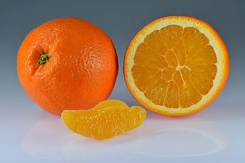 | 橙子 | Ivar Leidus | Oranges_-_whole-halved-segment.jpg | CC BY-SA 4.0 |
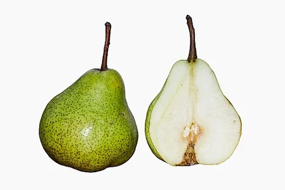 | 梨 | Augustus Binu : flickr | Pear DS.jpg | CC BY-SA 3.0 |
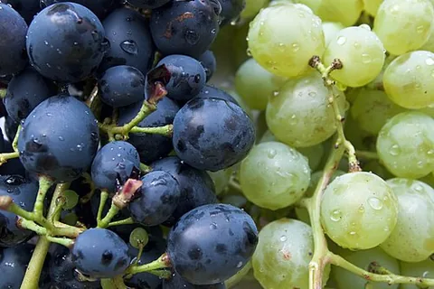 | 葡萄 | Vyacheslav Argenberg | Grapes,_Rostov-on-Don,_Russia.jpg | CC BY 4.0 |
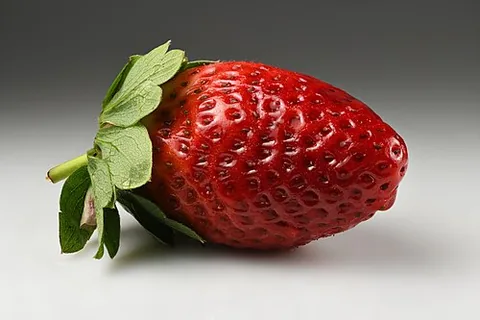 | 草莓 | Ivar Leidus | Garden_strawberry_(Fragaria_×_ananassa)_single2.jpg | CC BY-SA 4.0 |
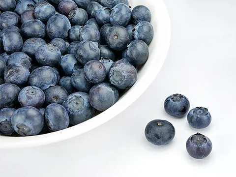 | 蓝莓 | Petar Milošević | Dish of blueberries.jpg | CC BY-SA 4.0 |
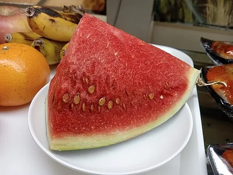 | 西瓜 | Ralff Nestor Nacor | Watermelon slice, May 2024.jpg | CC BY-SA 4.0 |
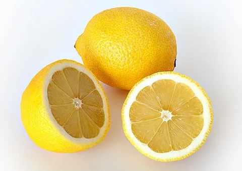 | 柠檬 | André Karwath aka Aka | Lemon.jpg | CC BY-SA 2.5 |
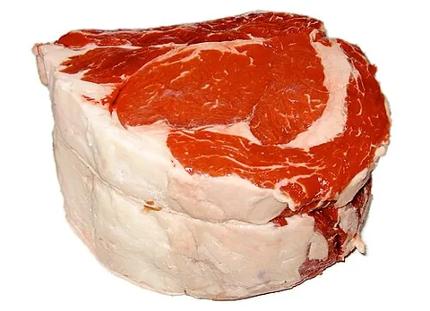 | 牛肉 | Michael C. Berch, aka MCB at en.wikipedia | Standing-rib-roast.jpg | CC BY-SA 2.5 |
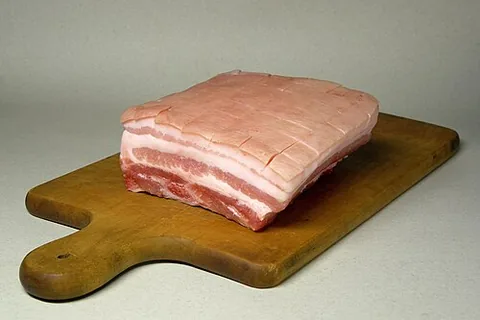 | 猪肉 | Rainer Zenz | Schweinebauch-2.jpg | CC BY-SA 3.0 |
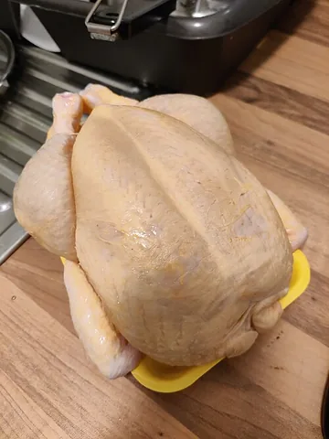 | 鸡肉 | Ibrahim Husain Meraj | Whole uncooked chicken meat 20211127 175955.jpg | CC BY-SA 4.0 |
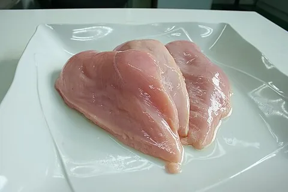 | 鸡胸肉 | kakyusei | Raw chicken slices.jpg | CC0 |
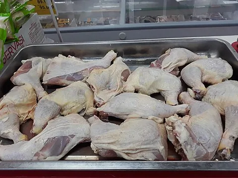 | 鸡腿 | Baoothersks | Raw leg chicken quarters.jpg | CC BY-SA 4.0 |
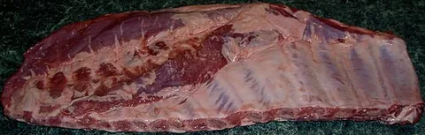 | 排骨 | Mendaliv | Raw pork spareribs.jpg | Public domain |
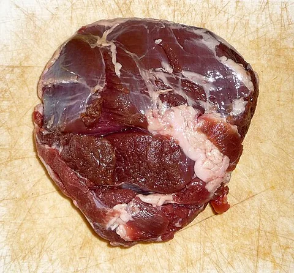 | 羊肉 | I would appreciate being notified if you use my work outside Wikimedia.
Do not copy this image illegally by ignoring the terms of the license below, as it is not in the public domain. If you would like special permission to use, license, or purchase the image please contact me to negotiate terms.
More of my work can be found in my personal gallery. | Lamb_meat_(1).jpg | CC BY-SA 3.0 |
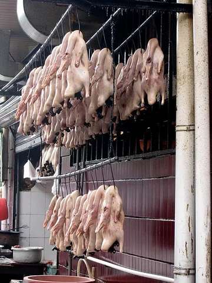 | 鸭肉 | cogdogblog | Duck, Duck, Duck (2863443552).jpg | CC0 |
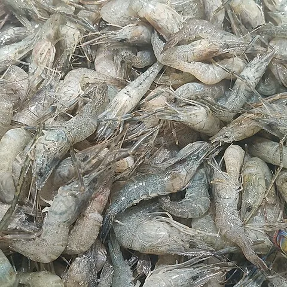 | 虾 | Fumikas Sagisavas | Raw river shrimp.jpg | CC0 |
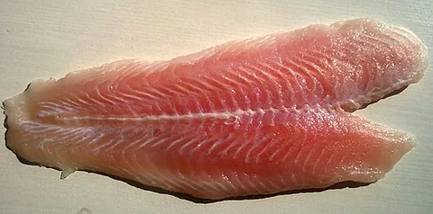 | 鱼肉 | Brücke-Osteuropa | Pangasius_meat.jpg | CC0 |
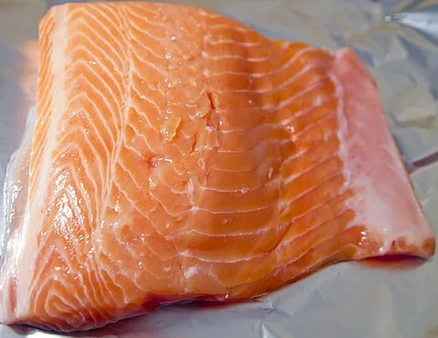 | 三文鱼 | Tiia Monto | Salmon2.jpg | CC BY-SA 3.0 |
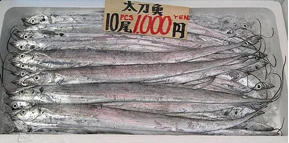 | 带鱼 | Takahashi | Trichiurus lepturus FishMarketInTokyo.JPG | Public domain |
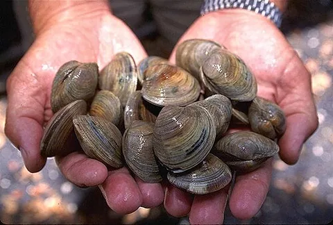 | 贝类 | Ken Hammond | LittleNeck clams USDA96c1862.jpg | Public domain |
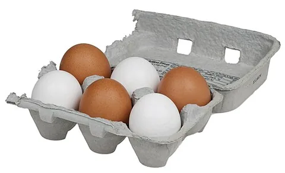 | 鸡蛋 | Evan-Amos | 6-Pack-Chicken-Eggs.jpg | Public domain |
| 鸭蛋 | Nadia Prigoda-Lee from Toronto, Canada | Duck Eggs - Flickr - the girl.jpg | CC BY 2.0 |
| 牛奶 | NIAID | Glass_of_Milk_(33657535532).jpg | CC BY 2.0 |
| 酸奶 | No machine-readable author provided. Rainer Zenz assumed (based on copyright claims). | Joghurt.jpg | CC BY-SA 3.0 |
| 奶酪 | 作者未署名（见来源页） | Cheese_platter.jpg | CC BY-SA 3.0 |
| 豆腐 | DryPot | Japanese_SilkyTofu_(Kinugoshi_Tofu).JPG | CC BY-SA 3.0 |
| 豆干 | Fumikas Sagisavas | Double-color tofu dried shred.jpg | CC0 |
| 豆皮 | Andrea Nguyen | Tofu_skin.png | CC BY 2.0 |
| 豆浆 | Kjokkenutstyr | 004-soymilk.jpg | CC BY-SA 2.0 |
| 黄豆 | Fumikas Sagisavas | Dried soybeans.jpg | CC0 |
| 大米 | Seb35 | Thai jasmine rice uncooked periodic.jpg | CC BY-SA 3.0 |
| 面粉 | Veganbaking.net from USA | All-Purpose Flour (4107895947).jpg | CC BY-SA 2.0 |
| 面条 | ProjectManhattan | Chinese Noodles.jpg | CC BY-SA 3.0 |
| 米粉 | Popo le Chien | Rice_vermicelli.jpg | CC BY-SA 3.0 |
| 燕麦 | en:user:Hankwang | Rolled_oats.jpg | Public domain |
| 面包 | 3268zauber | Korb_mit_Brötchen.JPG | CC BY-SA 3.0 |
| 馒头 | Aumrino970 | โต๊ะจีนหมั่นโถว.jpg | CC BY-SA 4.0 |
| 红薯 | Llez | Ipomoea_batatas_006.JPG | CC BY-SA 3.0 |
| 香菇 | Batholith (talk) | Lentinula edodes 20101113 c.jpg | Public domain |
| 口蘑 | chris_73 | ChampignonMushroom.jpg | CC BY-SA 3.0 |
| 金针菇 | frankenstoen | Flammulina_velutipes_(Enokitake,_winter_mushroom).jpg | CC BY-SA 2.0 |
| 木耳 | François Nguyen | Dried Black Fungus.jpg | CC BY 2.0 |
| 杏鲍菇 | Diego Delso | Seta de cardo (Pleurotus eryngii), 2012-10-03, DD 01.JPG | CC BY-SA 3.0 |
| 蒜 | Ivar Leidus | Garlic bulbs and cloves.jpg | CC BY-SA 4.0 |
| 姜 | Sanjay Acharya | Ginger Root.jpg | CC BY-SA 4.0 |
| 葱 | Evan-Amos | CSA-Red-Spring-Onions.jpg | Public domain |
| 食盐 | Poyraz 72 | Table salt with salt shaker V1.jpg | CC BY-SA 4.0 |
| 白糖 | User:Lcarsdata | Sugar on a blue plate (close up).jpg | CC BY-SA 3.0 |
| 食用油 | Lemone | Olive_oil_from_Oneglia.jpg | CC BY-SA 4.0 |
| 酱油 | Bodhi Peace | Bowl of soy sauce, the sequel.jpg | CC BY-SA 4.0 |
| 醋 | Sotaque | Rice vinegar.jpg | CC0 |
| 黑胡椒 | Ryan Snyder | Black Peppercorns (4422070187).jpg | CC BY 2.0 |
| 蜂蜜 | Scott Bauer, USDA ARS | Runny_hunny.jpg | Public domain |
| 蚝油 | Gossipguy | OysterSauce2.jpg | CC BY-SA 3.0 |
| 饮用水 | Mia Gaitanidis | Glass of water, detail.jpg | CC BY-SA 4.0 |
| 椰奶 | S Sepp | Cononut_milk.JPG | CC BY-SA 3.0 |
| 咖啡 | Bex Walton | Latte_and_dark_coffee.jpg | CC BY 2.0 |
| 油菜 | Tom Ackroyd | Choy sum for sale.tif | CC0 |
| 萝卜 | Self, en:User:Jengod | Radish_3371103037_4ab07db0bf_o.jpg | Public domain |
| 尖椒 | Takeaway | Madame_Jeanette_and_other_chillies.jpg | CC BY-SA 4.0 |
| 豆角 | David | Long Bean.JPG | Public domain |
| 蒜苔 | Canterel | Garlic_scape.jpg | Public domain |